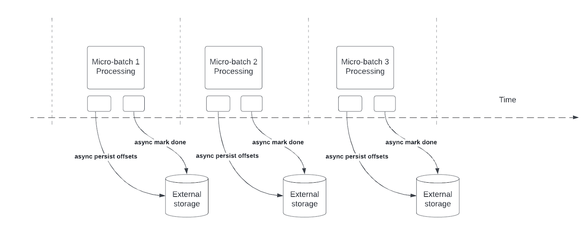

Structured Streaming Programming Guide
- Table of contents
Asynchronous Progress Tracking
What is it?
Asynchronous progress tracking allows streaming queries to checkpoint progress asynchronously and in parallel to the actual data processing within a micro-batch, reducing latency associated with maintaining the offset log and commit log.

How does it work?
Structured Streaming relies on persisting and managing offsets as progress indicators for query processing. Offset management operation directly impacts processing latency, because no data processing can occur until these operations are complete. Asynchronous progress tracking enables streaming queries to checkpoint progress without being impacted by these offset management operations.
How to use it?
The code snippet below provides an example of how to use this feature:
val stream = spark.readStream
.format("kafka")
.option("kafka.bootstrap.servers", "host1:port1,host2:port2")
.option("subscribe", "in")
.load()
val query = stream.writeStream
.format("kafka")
.option("topic", "out")
.option("checkpointLocation", "/tmp/checkpoint")
.option("asyncProgressTrackingEnabled", "true")
.start()
The table below describes the configurations for this feature and default values associated with them.
| Option | Value | Default | Description |
|---|---|---|---|
| asyncProgressTrackingEnabled | true/false | false | enable or disable asynchronous progress tracking |
| asyncProgressTrackingCheckpointIntervalMs | millisecond | 1000 | the interval in which we commit offsets and completion commits |
Limitations
The initial version of the feature has the following limitations:
- Asynchronous progress tracking is only supported in stateless queries using Kafka Sink
- Exactly once end-to-end processing will not be supported with this asynchronous progress tracking because offset ranges for batch can be changed in case of failure. Though many sinks, such as Kafka sink, do not support writing exactly once anyways.
Switching the setting off
Turning the async progress tracking off may cause the following exception to be thrown
java.lang.IllegalStateException: batch x doesn't exist
Also the following error message may be printed in the driver logs:
The offset log for batch x doesn't exist, which is required to restart the query from the latest batch x from the offset log. Please ensure there are two subsequent offset logs available for the latest batch via manually deleting the offset file(s). Please also ensure the latest batch for commit log is equal or one batch earlier than the latest batch for offset log.
This is caused by the fact that when async progress tracking is enabled, the framework will not checkpoint progress for every batch as would be done if async progress tracking is not used. To solve this problem simply re-enable “asyncProgressTrackingEnabled” and set “asyncProgressTrackingCheckpointIntervalMs” to 0 and run the streaming query until at least two micro-batches have been processed. Async progress tracking can be now safely disabled and restarting query should proceed normally.
Continuous Processing
[Experimental]
Continuous processing is a new, experimental streaming execution mode introduced in Spark 2.3 that enables low (~1 ms) end-to-end latency with at-least-once fault-tolerance guarantees. Compare this with the default micro-batch processing engine which can achieve exactly-once guarantees but achieve latencies of ~100ms at best. For some types of queries (discussed below), you can choose which mode to execute them in without modifying the application logic (i.e. without changing the DataFrame/Dataset operations).
To run a supported query in continuous processing mode, all you need to do is specify a continuous trigger with the desired checkpoint interval as a parameter. For example,
spark \
.readStream \
.format("kafka") \
.option("kafka.bootstrap.servers", "host1:port1,host2:port2") \
.option("subscribe", "topic1") \
.load() \
.selectExpr("CAST(key AS STRING)", "CAST(value AS STRING)") \
.writeStream \
.format("kafka") \
.option("kafka.bootstrap.servers", "host1:port1,host2:port2") \
.option("topic", "topic1") \
.trigger(continuous="1 second") \ # only change in query
.start()import org.apache.spark.sql.streaming.Trigger
spark
.readStream
.format("kafka")
.option("kafka.bootstrap.servers", "host1:port1,host2:port2")
.option("subscribe", "topic1")
.load()
.selectExpr("CAST(key AS STRING)", "CAST(value AS STRING)")
.writeStream
.format("kafka")
.option("kafka.bootstrap.servers", "host1:port1,host2:port2")
.option("topic", "topic1")
.trigger(Trigger.Continuous("1 second")) // only change in query
.start()import org.apache.spark.sql.streaming.Trigger;
spark
.readStream
.format("kafka")
.option("kafka.bootstrap.servers", "host1:port1,host2:port2")
.option("subscribe", "topic1")
.load()
.selectExpr("CAST(key AS STRING)", "CAST(value AS STRING)")
.writeStream
.format("kafka")
.option("kafka.bootstrap.servers", "host1:port1,host2:port2")
.option("topic", "topic1")
.trigger(Trigger.Continuous("1 second")) // only change in query
.start();A checkpoint interval of 1 second means that the continuous processing engine will record the progress of the query every second. The resulting checkpoints are in a format compatible with the micro-batch engine, hence any query can be restarted with any trigger. For example, a supported query started with the micro-batch mode can be restarted in continuous mode, and vice versa. Note that any time you switch to continuous mode, you will get at-least-once fault-tolerance guarantees.
Supported Queries
As of Spark 2.4, only the following type of queries are supported in the continuous processing mode.
- Operations: Only map-like Dataset/DataFrame operations are supported in continuous mode, that is, only projections (
select,map,flatMap,mapPartitions, etc.) and selections (where,filter, etc.).- All SQL functions are supported except aggregation functions (since aggregations are not yet supported),
current_timestamp()andcurrent_date()(deterministic computations using time is challenging).
- All SQL functions are supported except aggregation functions (since aggregations are not yet supported),
- Sources:
- Kafka source: All options are supported.
- Rate source: Good for testing. Only options that are supported in the continuous mode are
numPartitionsandrowsPerSecond.
- Sinks:
- Kafka sink: All options are supported.
- Memory sink: Good for debugging.
- Console sink: Good for debugging. All options are supported. Note that the console will print every checkpoint interval that you have specified in the continuous trigger.
See Input Sources and Output Sinks sections for more details on them. While the console sink is good for testing, the end-to-end low-latency processing can be best observed with Kafka as the source and sink, as this allows the engine to process the data and make the results available in the output topic within milliseconds of the input data being available in the input topic.
Caveats
- Continuous processing engine launches multiple long-running tasks that continuously read data from sources, process it and continuously write to sinks. The number of tasks required by the query depends on how many partitions the query can read from the sources in parallel. Therefore, before starting a continuous processing query, you must ensure there are enough cores in the cluster to all the tasks in parallel. For example, if you are reading from a Kafka topic that has 10 partitions, then the cluster must have at least 10 cores for the query to make progress.
- Stopping a continuous processing stream may produce spurious task termination warnings. These can be safely ignored.
- There are currently no automatic retries of failed tasks. Any failure will lead to the query being stopped and it needs to be manually restarted from the checkpoint.